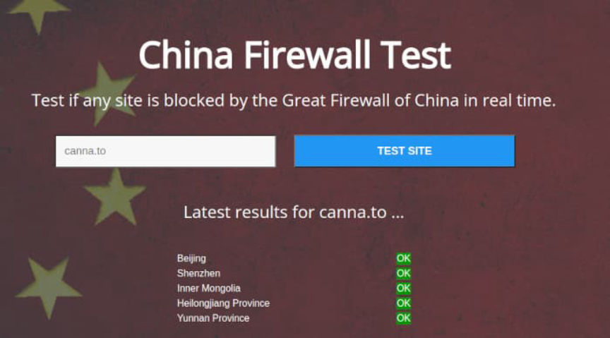
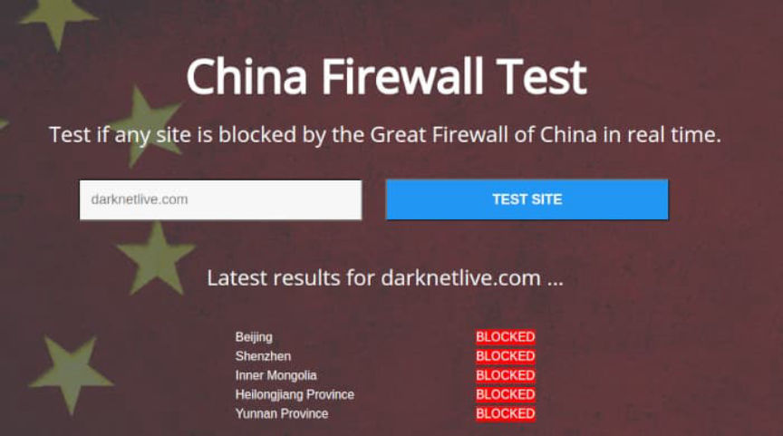
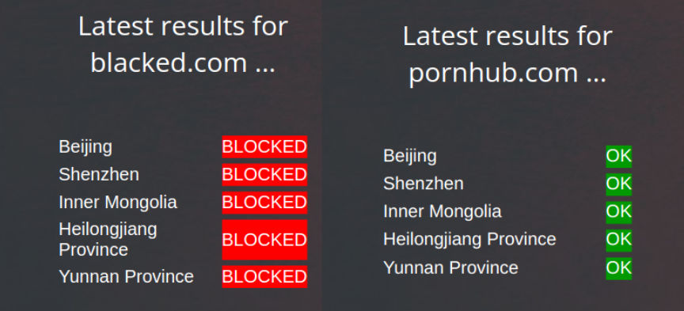
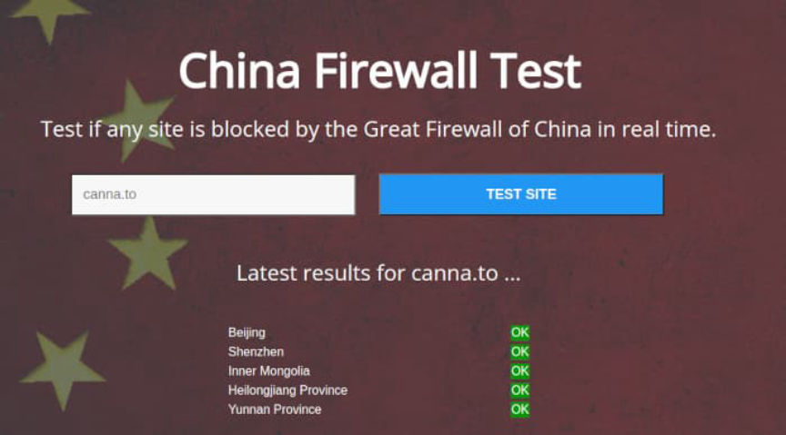
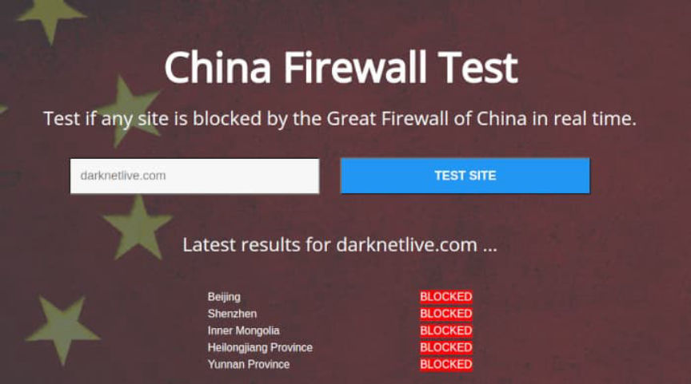
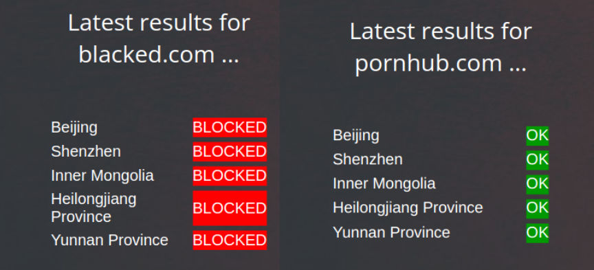

Quad9 Must Block DNS Queries to a Piracy Site in Germany
~4 min read | Published on 2021-12-12, tagged General-News using 931 words.
A court in Germany ruled that the DNS-resolver Quad9 must stop resolving DNS queries to an alleged piracy website unaffiliated with Quad9.
Earlier this year, Sony Music obtained an injunction against Quad9 in the lower court of Hamburg, Germany, that required the DNS-resolver to block DNS resolution of the domain or domains of a site that allegedly violates Sony’s copyrights. TorrentFreak, a site that is obviously more capable of reporting on piracy-related news than Darknetlive, identified the likely subject of the case as CannaPower, a well-known music-sharing website.
I will operate under the assumption that TorrentFreak is correct. A cursory examination of the injunction as well as the CUII initial action against the site indicates that TorrentFreak is likely right. However, Quad9 does not apparently have a record of blocking CannaPower–at least via the domain name provided in the TorrentFreak article. No variant of CannaPower’s URLs appear to be blocked by Quad9.
Prior to Sony’s case against the site, Internet Service Providers (ISPs) in Germany voluntarily agreed to block the resolution of DNS queries to sites hosting allegedly pirated content. CannaPower, which quickly added a set of mirrors to circumvent the DNS block, noted that the ISPs 1&1, Vodafone, and Telekom had already blocked their site. After the establishment of the Clearingstelle Urheberrecht im Internet (CUII) in early 2021, Vodafone grew increasingly aggressive in blocking access to websites. The provider voluntarily blocked access to Libgen, a huge online repository of free books and academic articles.
Of course, Germany is an awful country for uncensored internet access, perhaps only behind New Zealand and Russia and tied with the United States and the United Kingdom. As a result of Germany’s aggressive censorship policies, users of “piracy” sites are familiar with the process of switching to a better DNS resolver.
CannaPower guides its users to switch to Cloudflare, censurfridns.dk, Google, or simply DNS-over-TLS. (By the way, you should most likely do this regardless of the country you live in.) Sony, a company that aggressively pursues perceived Copywrite violations, has caught on to this tactic. Sony Music received an injunction in Germany against Quad9 which stopped the Swiss-based DNS-resolver from resolving the target site.
“We’re disappointed that this first set of hearings ended in what we think is an outcome that is not consistent with the legislative intentions of the German government,” said John Todd, General Manager of Quad9. “There are a large number of Internet-based services which we think ultimately are put at serious risk by this ruling, and we will not stop our legal challenges on this injunction. We object to the decision not just for ourselves but for all of our end-users, network operators, software developers, and network services that we believe are the targets of this ruling in its much wider context.”
As for the block being inconsistent with the legislative intentions of the German government, Todd might be correct. The German government wants to prevent so-called offensive content. Sites impacted by Germany’s laws, according to HumanRightsWatch, “include a leader of the far-right Alternative for Germany party, a satire magazine, and a political street artist.” (Imagine thinking AfD is actually “far-right” lol.) The blocking of piracy websites is something done at the behest of corporations.
Quad9 appealed this injunction. As reported by TorrentFreak on December 6, the Regional Court in Hamburg chose to uphold the previous ruling, ordering Quad9 to continue blocking the site in question.
Mostly Off-Topic/CW:Intentionally Antagonistic
Many will argue about how terrible the censorship in China is or the censorship in Russia for that matter. And the censorship in both countries is directed by the government and is a model directly incompatible with people living in what they believe are free countries. Neither China nor Russia block CannaPower.

Russia’s block lists, which are also mandated by the government’s internet police, function in a similar fashion to China’s firewall. For example, Russia’s Federal Service for Supervision of Communications, Information Technology and Mass Media asked DeepDotWeb to remove a guide on how to use a Russian darkweb marketplace. Prihar ignored the request. As a result, Russia’s internet police blocked access to the specific guide, leaving the rest of the site accessible to users in Russia.

China, for the most part, blocks websites the government considers socially harmful, such as Darknetlive.com, and pornography sites, such as xhamster.com. Content that brings shame to the national identity of the country or its government, criticism of the government although not necessarily criticism over policy, etc. Or the “Strict Management to Effectively Prevent Minors from Addiction to Online Games” that forces online gaming companies to only allow minors to play for one hour from 8:00 to 9:00 PM on Friday, Saturday, and Sunday. The gaming services must prevent minors from accessing online video games at any other times.

Chinese citizens should be thankful the government has saved them from the invasive services offered by Google or Twitter. (I am mostly joking about that last part as the Chinese government has filled the invasive role of those private companies. But, this is far out of the scope of this article and Darknetlive articles are the wrong place to discuss this issue.) Since this site explicitly does not encourage anti-social behavior such as drug abuse or fraud, I am guessing China blocked Darknetlive to prevent citizens from accessing a repository of links to hidden services.
I feel like this was far too long for an article about the blocking of a piracy website. However, the censorship at the ISP level and third-party DNS resolver is very important and will undoubtedly become a form of lawfare against other sites.
Injunction (pdf) via Quad9.
Earlier this year, Sony Music obtained an injunction against Quad9 in the lower court of Hamburg, Germany, that required the DNS-resolver to block DNS resolution of the domain or domains of a site that allegedly violates Sony’s copyrights. TorrentFreak, a site that is obviously more capable of reporting on piracy-related news than Darknetlive, identified the likely subject of the case as CannaPower, a well-known music-sharing website.
I will operate under the assumption that TorrentFreak is correct. A cursory examination of the injunction as well as the CUII initial action against the site indicates that TorrentFreak is likely right. However, Quad9 does not apparently have a record of blocking CannaPower–at least via the domain name provided in the TorrentFreak article. No variant of CannaPower’s URLs appear to be blocked by Quad9.
Prior to Sony’s case against the site, Internet Service Providers (ISPs) in Germany voluntarily agreed to block the resolution of DNS queries to sites hosting allegedly pirated content. CannaPower, which quickly added a set of mirrors to circumvent the DNS block, noted that the ISPs 1&1, Vodafone, and Telekom had already blocked their site. After the establishment of the Clearingstelle Urheberrecht im Internet (CUII) in early 2021, Vodafone grew increasingly aggressive in blocking access to websites. The provider voluntarily blocked access to Libgen, a huge online repository of free books and academic articles.
Of course, Germany is an awful country for uncensored internet access, perhaps only behind New Zealand and Russia and tied with the United States and the United Kingdom. As a result of Germany’s aggressive censorship policies, users of “piracy” sites are familiar with the process of switching to a better DNS resolver.
CannaPower guides its users to switch to Cloudflare, censurfridns.dk, Google, or simply DNS-over-TLS. (By the way, you should most likely do this regardless of the country you live in.) Sony, a company that aggressively pursues perceived Copywrite violations, has caught on to this tactic. Sony Music received an injunction in Germany against Quad9 which stopped the Swiss-based DNS-resolver from resolving the target site.
“We’re disappointed that this first set of hearings ended in what we think is an outcome that is not consistent with the legislative intentions of the German government,” said John Todd, General Manager of Quad9. “There are a large number of Internet-based services which we think ultimately are put at serious risk by this ruling, and we will not stop our legal challenges on this injunction. We object to the decision not just for ourselves but for all of our end-users, network operators, software developers, and network services that we believe are the targets of this ruling in its much wider context.”
As for the block being inconsistent with the legislative intentions of the German government, Todd might be correct. The German government wants to prevent so-called offensive content. Sites impacted by Germany’s laws, according to HumanRightsWatch, “include a leader of the far-right Alternative for Germany party, a satire magazine, and a political street artist.” (Imagine thinking AfD is actually “far-right” lol.) The blocking of piracy websites is something done at the behest of corporations.
Quad9 appealed this injunction. As reported by TorrentFreak on December 6, the Regional Court in Hamburg chose to uphold the previous ruling, ordering Quad9 to continue blocking the site in question.
Mostly Off-Topic/CW:Intentionally Antagonistic
Many will argue about how terrible the censorship in China is or the censorship in Russia for that matter. And the censorship in both countries is directed by the government and is a model directly incompatible with people living in what they believe are free countries. Neither China nor Russia block CannaPower.

Canna is not blocked in China either.
Russia’s block lists, which are also mandated by the government’s internet police, function in a similar fashion to China’s firewall. For example, Russia’s Federal Service for Supervision of Communications, Information Technology and Mass Media asked DeepDotWeb to remove a guide on how to use a Russian darkweb marketplace. Prihar ignored the request. As a result, Russia’s internet police blocked access to the specific guide, leaving the rest of the site accessible to users in Russia.

I do not blame them.
China, for the most part, blocks websites the government considers socially harmful, such as Darknetlive.com, and pornography sites, such as xhamster.com. Content that brings shame to the national identity of the country or its government, criticism of the government although not necessarily criticism over policy, etc. Or the “Strict Management to Effectively Prevent Minors from Addiction to Online Games” that forces online gaming companies to only allow minors to play for one hour from 8:00 to 9:00 PM on Friday, Saturday, and Sunday. The gaming services must prevent minors from accessing online video games at any other times.

kek
Chinese citizens should be thankful the government has saved them from the invasive services offered by Google or Twitter. (I am mostly joking about that last part as the Chinese government has filled the invasive role of those private companies. But, this is far out of the scope of this article and Darknetlive articles are the wrong place to discuss this issue.) Since this site explicitly does not encourage anti-social behavior such as drug abuse or fraud, I am guessing China blocked Darknetlive to prevent citizens from accessing a repository of links to hidden services.
I feel like this was far too long for an article about the blocking of a piracy website. However, the censorship at the ISP level and third-party DNS resolver is very important and will undoubtedly become a form of lawfare against other sites.
Injunction (pdf) via Quad9.